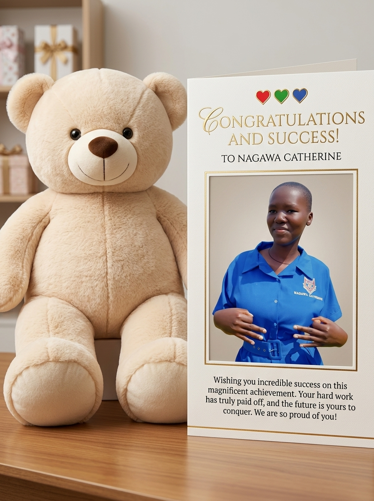

A mind that keeps growing
Learning success
Nagawa Catherine, every question you ask and every lesson you explore can open a new door. Celebrate your curiosity as much as the answers you find.
A celebration for Nagawa Catherine
Twenty little reminders for Nagawa Catherine: progress is not only a prize or a perfect result. It can be a brave beginning, a kind choice, a lesson learned, or simply continuing at your own pace.
Explore the cardsTo Nagawa Catherine
Choose a card for the moment you want to celebrate. Each message is a wish and a reminder—not an assumption about what you have or have not achieved. Your story and your definition of success are yours to shape.
Twenty ways to shine
01 — 20

A mind that keeps growing
Nagawa Catherine, every question you ask and every lesson you explore can open a new door. Celebrate your curiosity as much as the answers you find.
.jpg)
Keep showing up
To Catherine: steady effort matters, even when progress is quiet. Every honest try is something worth being proud of.
.jpg)
Becoming, at your pace
You do not have to be the same person you were yesterday. May you notice, value, and celebrate the ways you are growing.
.jpg)
The first step counts
Starting something new takes courage. Catherine, may you give yourself credit for every brave beginning, big or small.
A bright thing to share
A thoughtful word or caring choice can make a difference. May kindness be something you give freely and receive, too.
Make room for ideas
Your imagination belongs to you, Catherine. Celebrate each idea you explore, shape, share, or simply keep for yourself.
Trust your own voice
Confidence can begin with one small moment of believing in yourself. May you keep making space for your own voice and choices.
There is no single timeline
Some things take time, and that is all right. Catherine, your pace is allowed to be your own.
Lead in your own way
Listening, encouraging others, and making thoughtful choices are all meaningful ways to lead. Celebrate the kind of leader you choose to be.
Better, together
Sharing ideas, offering encouragement, and learning alongside others can make a win even more meaningful.
Keep wondering
Every new interest starts with a question. May curiosity keep leading you toward discoveries that feel exciting and true to you.
One step at a time
Taking a breath, looking at the choices, and trying a thoughtful next step is a win in itself. You can learn as you go.
Your choices matter
Catherine, listening to yourself and choosing what feels right for you takes care and strength. Your boundaries deserve respect.
Your story, your words
Speaking up, asking a question, or sharing a thought in your own time can be a powerful step. Your perspective has room here.
A new try is its own win
A difficult moment does not define your whole story. May you find support, take the time you need, and choose your next step when you are ready.
Small steps add up
Little routines and promises you make to yourself can build momentum. Celebrate the care you put into showing up.
The little things count
Finishing a task, making time to rest, or getting through a busy day can be worth celebrating. Not every win needs an audience.
Let yourself explore
Learning something new takes practice and curiosity. May you enjoy the journey as much as the moment it starts to click.
Keep the future yours
Your hopes can change as you learn more about yourself. Catherine, may you dream freely and choose the future that feels like yours.
No one else gets to be you
The way you grow, what you value, and who you become are yours to decide. Here's to Nagawa Catherine—today, tomorrow, and every step in between.
A note for Catherine
It can be a milestone, a quiet effort, a new lesson, or a moment when you choose what is right for you. Keep your story yours, and celebrate it in the way that feels right.
Back to your story